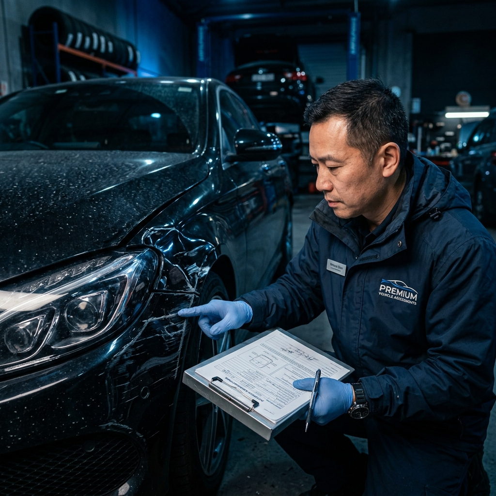

Peritación de Accidentes
Valoración objetiva de daños tras accidentes de tráfico. Informe pericial completo con validez legal para reclamaciones a aseguradoras.
Ver más

Más de 15 años avalando la verdad sobre el valor real de los vehículos. Tasaciones periciales, accidentes, seguros y compraventa en Gijón y toda Asturias.
Ofrecemos una gama completa de servicios de peritaje vehicular adaptados a cada situación.
Valoración objetiva de daños tras accidentes de tráfico. Informe pericial completo con validez legal para reclamaciones a aseguradoras.
Determinación del valor real de mercado de cualquier vehículo. Imprescindible para compraventas, herencias, divorcios o garantías bancarias.
Asistencia técnica independiente ante compañías aseguradoras. Garantizamos que recibes la compensación justa que te corresponde.
Informes periciales con plena validez ante juzgados y tribunales. Perito inscrito en el Colegio de Ingenieros de Asturias.
Antes de comprar un vehículo de segunda mano, conoce su estado real. Detectamos fallos ocultos, kilometrajes manipulados y más.
Cuantificación objetiva de daños causados por robo, intento de robo o actos vandálicos. Informe para la aseguradora y denuncia policial.
Llámanos o rellena el formulario online. Te atendemos de lunes a viernes de 9:00 a 19:00.
Nuestro perito se desplaza a la ubicación del vehículo o lo inspeccionamos en nuestras instalaciones.
Preparamos un informe pericial detallado con fotografías, valoraciones y conclusiones técnicas.
Recibes el informe firmado y sellado, con plena validez legal, listo para presentar donde necesites.

En Gijón Peritaciones somos peritos independientes, sin vinculación con ninguna compañía aseguradora. Eso significa que trabajamos exclusivamente para ti, con total objetividad e imparcialidad.
"Tras mi accidente la aseguradora me ofreció una cantidad muy inferior al daño real. Gijón Peritaciones elaboró un informe que me permitió reclamar correctamente. Conseguí el 40% más de indemnización."
"Quería comprar un coche de segunda mano y pedí una inspección precompra. El perito detectó que el cuentakilómetros estaba manipulado y los bajos presentaban corrosión importante. Me ahorré un gran disgusto."
"Necesitaba una tasación oficial del vehículo de mi padre fallecido para la herencia. El servicio fue muy profesional, rápido y el informe completísimo. Muy recomendable."
"Como abogado, trabajo frecuentemente con Gijón Peritaciones para obtener informes periciales en causas judiciales. Su rigor técnico y su desempeño en sala son impecables. Son mis peritos de confianza."
"Me robaron el coche y lo encontraron con daños severos. La aseguradora quería repararlo pero el perito demostró que era una pérdida total. Gracias a su informe cobré el valor real del vehículo."
Contacta ahora y recibe una respuesta en menos de 2 horas. Sin compromisos, sin costes ocultos.